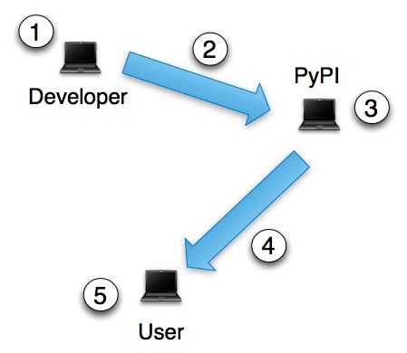

The Python Packaging Ecosystem¶
If you’re here looking for concise information on how to install Python distributions, please see basic distribution installation. If you’re looking for concise instructions for creating and distributing your own distributions, please see basic distribution creation.
To learn more general information about how the pieces of the Python packaging ecosystem fit together, read on.
The Big Picture¶
The Python packaging ecosystem consists of the following major components:
- Users
- Users (5) of Python who would like to install third-party modules (see distributions below) on their system.
- Distributions
- Juicy and delicious third-party Python modules, ripe for the
picking.
:)See distribution. - Python installations
- You might be using your system Python (the one that came installed on your OS), or you might have built and installed your own. Each Python installation can have its own set of installed distributions.
- Virtual environments
- A Python installation will often have one or more named virtual environments set up (such that you can install distributions into the named environment rather than the Python installation itself). See Virtual Environments for more about virtual enviroments. They are very easy to set up, and the basic distribution installation doc walks you through it.
- An Online Index of Distributions
- This is the PyPI. Grand Central Station for Python distributions (3).
- PyPI Contributors
- Developers (1) creating distributions. It’s quite easy to become one. Please see basic distribution creation to get started. Your work is appreciated—please contribute!
- Tools for installing distributions
- We recommend using Pip (4).
- Tools for creating and distributing distributions
- We recommend using Distribute (2) (which—behind the scenes—uses the standard distutils module).